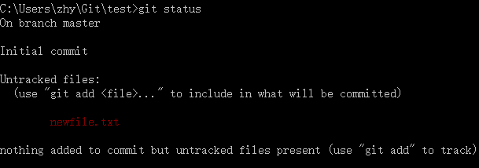
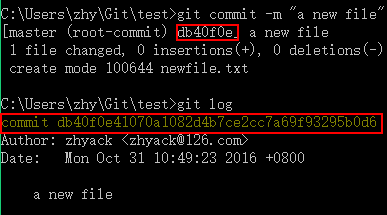
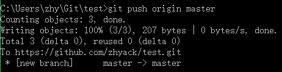

Zhy's Blog~

简单的Git起步指南
何为Git？
Git是一种一般用于管理代码的版本控制系统，与之处于同一level上的还有svn，cvs等。它既可以在本地使用，又可以通过网络服务器进行远程管理，常见的远程服务供应商有github和bitbucket等。
当然对于刚起步者来说，也可以简单地将git看作这么一个东西：
这个隐藏文件夹一般都会是你整个repo（仓库——表示一整个项目，本地会存储在对应项目名的文件夹下）中最占空间的，但要知道它包含着你以往所有commit过的版本信息，只要这个文件夹完整，你的历史commit过的各个版本永远都不会丢。为什么使用Github？
原因很简单——永远不要把鸡蛋放在一个篮子里。放在本地的git仓库随时都面临着各种可能导致数据丢失的危险，一旦关键的
.git数据丢失，以往的版本都将一去不复返，更何况一般丢数据都是整个项目一起挂掉的。- 如果使用U盘/硬盘/云盘进行数据备份，那会面临着备份繁琐，容易忘记备份时间、版本，以及系统提示你对于同名文件是替换还是跳过的窘境，当然还有一种更囧的场景——你将文件A改名为文件B，备份时系统也没提示你是否替换或跳过，结果你的备份里就莫名多了一个垃圾文件... 使用git可以很大程度上解决以上问题。git会根据你当前的版本信息
<HEAD>，以及你当前本地文件信息，判断出你到底做出了哪些改动；通过将改动add到<HEAD>中，就会更新到你的新版本信息中，然后通过commit即可生成新的版本，这整个过程是增量式的，不会说改动后还存在任何垃圾，而且所有的改动只需正常在本地添加、删除、修改文件即可。当然，git也并不是万能的，在merge两个版本时它也会面临着不可能完美解决的问题——两个版本的文件保留哪个？但git会产生diff信息，以便于手工选择保留的部分。 - 作为git的网络服务供应商，github可谓是最大的开源代码共享平台，其开源项目之多，以及完美的
fork机制，漂亮实用的界面，还有gist等功能，无疑是开源项目搭载平台的首选。但其免费功能中不包括私有仓库，也就是说你的所有代码都是公开的。如果有私有仓库的需求，推荐bitbucket，对于个人或者小团体的私有项目可以充分满足需求，而且有国内的cdn，访问速度比github快。当然，两个网站都支持搭建个人主页，可参见我的博客搭建笔记。
- 如果使用U盘/硬盘/云盘进行数据备份，那会面临着备份繁琐，容易忘记备份时间、版本，以及系统提示你对于同名文件是替换还是跳过的窘境，当然还有一种更囧的场景——你将文件A改名为文件B，备份时系统也没提示你是否替换或跳过，结果你的备份里就莫名多了一个垃圾文件... 使用git可以很大程度上解决以上问题。git会根据你当前的版本信息
以下部分都以github平台为例。
git安装&配置
git下载
国内下载可能会慢的出奇，迅雷也许可以快点...- 下载完成后无脑安装，配置都默认就可以，提示安装git-bash时推荐安装。
- 安装完成后打开git-bash即可使用git的各种命令了。
- 为了在Windows的cmd和powershell方便地用git命令，将git路径
C:\Program Files\Git\cmd添加到环境变量中去。 - 首次使用git时可能会提示输入用户名和邮箱，好好填写（认真脸.jpg）：
git config --global user.name "username" git config --global user.email "email"
新建仓库
github右上角

然后导入到本地即可编辑导入仓库
github和bitbucket的仓库中都会提供https链接和ssh链接以供导入

区别在于https无须任何设置，但任何远程操作需要提供账号密码作为凭据； ssh需要在本地生产ssh-key，这样你的机器拥有唯一的key可以免账号密码验证直接与远程交互。入门推荐https。
本地git-bash或cmd中在合适位置使用类似git clonehttps://github.com/zhyack/test.git的命令从github上获取仓库内容，链接换成自己的。
这样远程的仓库就拿到本地了。当前版本信息
使用git status查看当前处于哪个分支，以及本地文件改动情况。
添加/回撤本地改动
- 使用git add将本地改动添加到
<HEAD>中，添加个别文件用git add <file path>，但一般都是添加所有改动git add .
- 如果还未使用
git add添加改动，但又后悔对某个文件的改动，可以使用git checkout <file path>对文件进行回撤 - 如果已经使用了
git add，但又后悔所做的改动，可以使用git reset HEAD使<HEAD>回滚到原来的状态，但文件内容是没有发生改变的。
- 使用git add将本地改动添加到
提交/回撤本地改动
- 在
git add之后如果确定要提交/保存这次改动就使用git commit进行提交，一般命令形式为git commit -m "..."，其中最后的字串为附加信息，随意填写。 - 在使用
git commit之后会产生一个版本号commit_id，历史的版本号可以使用git log查看到，如果后悔了最近的某一次/几次提交，可以使用git reset --hard commit_id来进行回撤，但注意--hard 回撤会删除对应commit的所有改动，无法找回；如果只是想将版本号前移而不希望本地文件有任何改动，可以不加--hard，也就是git reset commit_id，但回撤掉的commits还是无法找回的。

- 在
提交/同步到Github
- 使用git push命令对本地的commit向远程服务器进行提交，一般来说默认的分支是
origin/master，所以提交的命令为git push origin master
 - 如果你有两台机器维护一个仓库，那么就会有这样一个问题——一台机器改动之后，另一台机器上的文件是不会跟着改动的，导致两个本地之间，本地和远程之间的不同步。如果是这种情况，在其中一台本地机器上进行
git push之后，要记得在另外一台机器做出本地改动之前进行git pull来同步远程，一般命令为git pull origin master，否则你可能会面临着要手动merge的窘境。
- 使用git push命令对本地的commit向远程服务器进行提交，一般来说默认的分支是
以上内容可以满足基本需求，体验git的更多便利可以继续往下看...
多分支
- 使用git branch $branch_name来创建新的分支
- 使用git checkout $branch_name来切换分支，但切换之前必须将当前分支的改动commit掉
- 多分支的作用——临时改动（测试），多版本分工，保留历史版本等等
- 具体可根据官方教程做一遍，就可以简单应用了。
.gitignore
- 本地的代码运行时可能产生一些工程文件、编译文件、可执行程序等，这是我们不希望保存和上传的，可以借助.gitignore来实现对
git add的控制，具体参见博文
- 本地的代码运行时可能产生一些工程文件、编译文件、可执行程序等，这是我们不希望保存和上传的，可以借助.gitignore来实现对
fork & pull request
- fork会保留原作者信息，在fork后的仓库中有指向原仓库的链接
- fork后的仓库归自己所有，在本地显示的branch是
origin/master，不会影响原仓库；但如果你认为你的改动有助于原项目的改善，可以向原项目发送pull request，原仓库的持有者会受到消息并判断是否要将你的改动并入原仓库。 - 其实也可以看作是
fork原分支是在你的账户下的一个远程分支，原仓库的持有者可以选择是否merge。
概览

Copyright © 2015-2016 zhyack. All Rights Reserved.
如对文章有任何疑问，请移步问题聚集区一览~